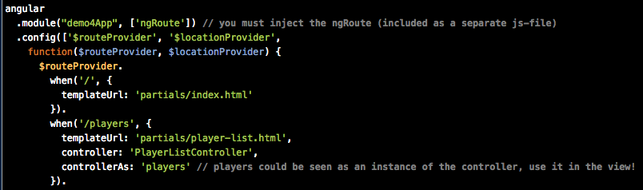
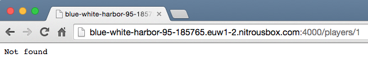

Webbramverk, 1DV450
Linnéuniversitetet, vt 2015
JavaScriptramverk
AngularJS part II
AngularJS - Förra gången

- JavaScriptramverk
- Imperativ vs. deklarativ programmering
- ng-model, ng-controller, controllerAs
- Scope - ViewModel
- Dependency injection
- Services
- ngRoutes (lite...)
AngularJS - Idag
- Exempel - routing
- Promises, $q
- AJAX, $http
Routing
- Ladda ner angular-route.js
- Inkludera ngRoute som modul i din applikation
- Flyttades ut från angular.js core från 1.2 RC1

State
- Observera att det är webbläsarens URL som ändras från javascripten
- Man gör inga request mot servern som laddar om sidan
-

- Vill vi använda deep-linking, bookmarks och annat måste vi på servern ser till att varje anrop alltid laddar in index
<ifModule mod_rewrite.c>
RewriteEngine On
RewriteCond %{REQUEST_FILENAME} !-f
RewriteCond %{REQUEST_FILENAME} !-d
RewriteCond %{REQUEST_URI} !index
RewriteRule (.*) index.html [L]
</ifModule>
Hashbang #!
Som default använder sig angularjs av hashbang när man skapar upp URL:er för webbläsaren
example.com/#!/player/1
Med hjälp av angulars $locationProvider kan vi istället använda
HTML5 History API (IE >=10). Sägs ha fallback!
// För att undvika detta (vilket du bör göra!)
$locationProvider.html5Mode(true);
Partial views
- SPA skiftar "states" och laddar om views i en och samma sida
- Vi vill kunna tala om vad som ska laddas in

Exempel routing och views

Applikationsstruktur
app/
----- controllers/
---------- mainController.js
---------- otherController.js
----- directives/
---------- mainDirective.js
---------- otherDirective.js
----- services/
---------- userService.js
---------- itemService.js
----- js/
---------- bootstrap.js
---------- jquery.js
----- app.js
views/
----- mainView.html
----- otherView.html
index.html
app/
----- shared/ // acts as reusable components or partials of our site
---------- sidebar/
--------------- sidebarDirective.js
--------------- sidebarView.html
----- components/ // each component is treated as a mini Angular app
---------- home/
--------------- homeController.js
--------------- homeService.js
--------------- homeView.html
---------- blog/
--------------- blogController.js
--------------- blogService.js
--------------- blogView.html
----- app.module.js
----- app.routes.js
assets/
----- img/ // Images and icons for your app
----- css/ // All styles and style related files (SCSS or LESS files)
----- js/ // JavaScript files written for your app that are not for angular
----- libs/ // Third-party libraries such as jQuery, Moment, Underscore, etc.
index.html
SPA - Asynkrona anrop
- XMLHttpRequest (XHR)
- Asynkron programmeringsmodell
- Koden kan lätt bli rörig vid många av varandra beroende anrop
- Anropa en tjänst på en annan server?
Same-orgin security policy:
XHR får ske endast till samma källa (protocol, host, port)

Bök - callback hell!
function fetchData(id, callback){
getDataFromServer(id, function(err, result){
if(err){
callback(err, null);
}else{
transformData(result, function(err, transformedResult){
if(err){
callback(err, null);
}else{
saveToIndexDB(result, function(err, savedData){
callback(err, savedData);
});
}
});
}
});
}
Promise API
Ett försök att göra asynkron programmering mer lik synkron
ES6
- Promise API - ej specifikt för angularJS
- I AngularJS används $q-service (inspirerat från http://github.com/kriskowal/q)
- Promises ses som "hållare för"/"löfte om" framtida resultat - t.ex. en AJAX-förfrågan
- Kedja metodanrop, enklare felhantering...
- $http har inbyggt stöd för promise
- pending, fulfilled, rejected, settled
Promises with $q
// In a service that will do something async
// It will be called by someone
function getSomething() {
// "defer" == fördröj
var fullfillment = $q.defer();
// Here we do someting async that takes time
doAsync(function(result){
if(result) {
fullfillment.resolve(result); // succeed
}
else {
fullfillment.reject('Error'); // error
}
});
return fullfillment.promise; // Returnerar ett promise
}
EXEMPEL
XHR i angularJS - $http
AngularJS har ett inbyggt API som inkuderar XHR, JSONP, CORS m.m.
Returnerar ett promise
- $http.get(url, config)
- $http.post(url, data, config)
- $http.put(url, data, config)
- $http.delete(url, config)
- $http.head(url, config)
- $http.jsonp(url, config)


Exempel $http
$resources
Angular har en service som kapslar in RESTful-anrop (CRUD)
"Restangular is an AngularJS service that simplifies common GET, POST, DELETE, and UPDATE requests with a minimum of client code. It's a perfect fit for any WebApp that consumes data from a RESTful API."

Exempel $http as resourse
Nästa gång
- Directives
- Custom directives
- Custom filters
- Övrigt...
Custom Directives
- Angular har ett antal built-in directives (ngClick, ngShow)
- Man kan också utveckla egna! - Utöka HTML
- Ge möjlighet för mer deklarativ programmering
- Hanterar DOM-hantering i dina direktiv
- Återanvända i UI

Kan inkluderas som element, attribut, kommentar och CSS-klass
<my-directive></my-directive>
<input my-directive="">
<input class="my-directive">
<!-- directive: my-directive -->
- Browsern skapar DOM-trädet
- Angular går igenom hela DOM-trädet
- Matchar element, attribut, css-klasser, kommentarer mot de registrerade "directives" som finns
- När dessa hittas så körs deras "compile functions" som returnerar "linking functions" - Innan scope skapats
- Scope skapas och alla "linking functions" anropas
- Eventuell bindning mellan Scope och DOM kan ske där
Deklarativt i HTML

Kod i applikationen

http://amitgharat.wordpress.com/2013/06/08/the-hitchhikers-guide-to-the-directive/
Exempel Custom directives
Custom filters


ExempelCustom filters
 Denna presentation är licensierat under en
Creative Commons Erkännande 3.0 Unported Licens. (Där inte annat anges)
Denna presentation är licensierat under en
Creative Commons Erkännande 3.0 Unported Licens. (Där inte annat anges)